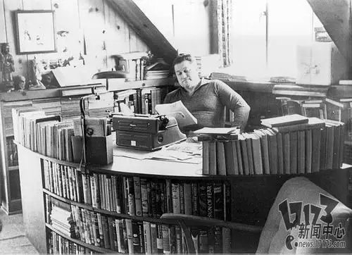

注意:所有故事纯属虚构
克苏鲁神话是取材于洛夫克拉夫特为主的一众作家所写的科zhi幻、怪奇小说而形成的所谓的神话体系。在该世界观之下，地球上不止存在人类这一种智慧生物，有从宇宙来地球的殖民者（米·戈、伊斯之伟大种族、古老者、盖夏虫族）、有降临在地球上旧日支配者的仆从（深浅者、克苏鲁的星之眷族）、甚至有与人类一样从脊椎动物进化过来的蛇人（从生物学来看应该属于蜥形纲、这点属于和弓纲进化过来的人类不同）出来这些人类还可以理解的存在以外，还有一些怪物与神灵（旧日支配者）。怪物方面比如说人类无法理解的：廷达罗斯之猎犬（生活在角维度的怪奇生物，专门追杀时间穿越（窥探）者）在克苏鲁神话的世界观中普通人是不知道有这些奇怪的东西存在的，而且对于人类而言也有专门对抗解决这些神话生物组织。（光荣——但毫无荣耀的战斗……）虽然有这些组织但或是伪装成其他组织或者不被政府承认。（在与异界敌人的漫长而毁灭性的战争中，即使人类终将失败，讲述人类的艰辛和苦难的故事也不会是徒劳的。——C.A.史密斯）
该体系的核心部分，就是旧日支配者(old ones)。它们是恐怖的、拥有伟大力量的古老存在，在上古时代曾经统治地球，但结果却被古神封印，在如死亡般的睡梦中安眠。它们之中最有名的就是克苏鲁(Cthulhu)，它沉睡在南太平洋的海底都市拉莱耶(R'lyeh)。当繁星的位置正确之时，拉莱耶将从海底浮上，克苏鲁将醒来，为地球带来浩劫。
尽管克苏鲁非常著名，以至于整个神话体系都以它来命名，但它并不是旧日支配者中最强大的，也不是故事的中心。占据这一系统中心位置的，是魔神之首阿撒托斯(Azathoth)，而奈亚拉托提普(Nyarlathotep)则与人类世界接触得更加频繁，而且，和其它的旧日支配者相比，它更喜欢欺骗、诱惑人类。宇宙诞生之初，只有阿撒托斯存在。从阿撒托斯生出了“黑暗”、“无名之雾”和“混沌”。一说无名之雾和阿撒托斯并列。盲目痴愚的阿撒托斯最初生出的是“黑暗”，而“黑暗”产生出了“至高母神”莎布·尼古拉丝(Shub-Niggurath)，她拥有很强的生育能力。传说她生出了包括克苏鲁在内的几乎所有旧日支配者，乃至一切生命。“无名之雾”产生出了“门之钥”犹格·索托斯(Yog-Sothoth)，知晓一切的时间和空间，是银之门钥匙的存在。而“混沌”就是奈亚拉托提普，常被称为“信使”，是嘲笑与矛盾的象征。他经常使用的人类形态化身是一个皮肤黝黑，表情愉悦的瘦高男子，曾经在埃及受到崇拜，传说是他推动了原子弹的发明，目的是让人类更快的自我灭绝，完成“大清扫”的任务。在克苏鲁神话的小说故事中，角色可能会因探究过深或通过一些机遇遭遇旧日支配者或是其他的宇宙种族，而他们的结果大多数是死亡和陷入疯狂。洛夫克拉夫特本人生前，并没有想过对他所创造的神话作一个系统的整理。在1933年4月27日写给J·F·摩顿的信中，他阐述了自己对克苏鲁神话体系的一些基础性构想。在他去世之后，奥古斯特·威廉·德雷斯对他的体系进行了整理，并提出了“克苏鲁神话”这一称谓。该体系中的题材有一部分可能来自世界各地神话传说的再诠释，如旧日支配者伊塔库亚取材于北美传说中的雪怪温迪戈（Wendigo）。
霍华德·菲利普·洛夫克拉夫特
Howard·Phillips·Lovercarft（1890年—1937年）
与希腊神话、北欧神话、中国神话有着明确的等级与管理体系不同，克苏鲁神话体系完全是混乱与开放
的，后来洛夫克拉夫特著作权向所有的作家开放，全世界的小说家都可以根据克苏鲁神话体系的世界观不断创作出全新的神话故事，就越发混乱了。
在洛夫克拉夫特笔下，所有克苏鲁系统的神明都被统一称作旧日支配者，它们从数亿年前就存在于这个宇宙中，拥有人类无法想像的能力。
1937年，46岁的爱手艺爷爷（Lovecraft惨遭国内粉丝翻译后的产物）去世，他的好基友兼作家奥古斯特·威廉·德雷斯首次提出“克苏鲁神话”这个概念，并重构了爱手艺爷爷笔下混乱无序的世界。
德雷斯把自己的基督教信仰也融合进了克苏鲁神话，把它变成带有“善恶相生相克“这一内涵的16禁文学。这与爱手艺本来黑暗、肃杀而又无拘无束的背景设定是完全相背的。但德雷斯确实有效地扩大再生产了克苏鲁神话，使其成为一个名声在外而又活力四射的文学雨林带。
奥古斯特·威廉·德雷斯
Agust William Derleth

重建后的克苏鲁神话分出外神（Outer Gods）、古神（Elder Gods）、旧日支配者（Great Old Ones）、地球原神（Great Ones）以及其它强大存在（Other Supernatural Beings）这些不同的系统，并在其中引入了善恶和元素属性的概念。